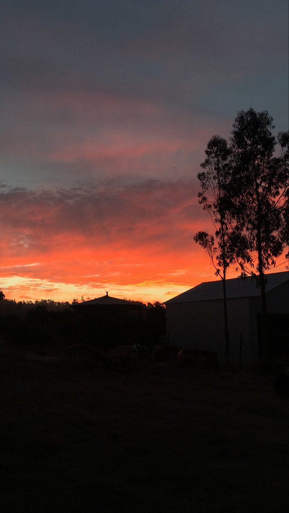
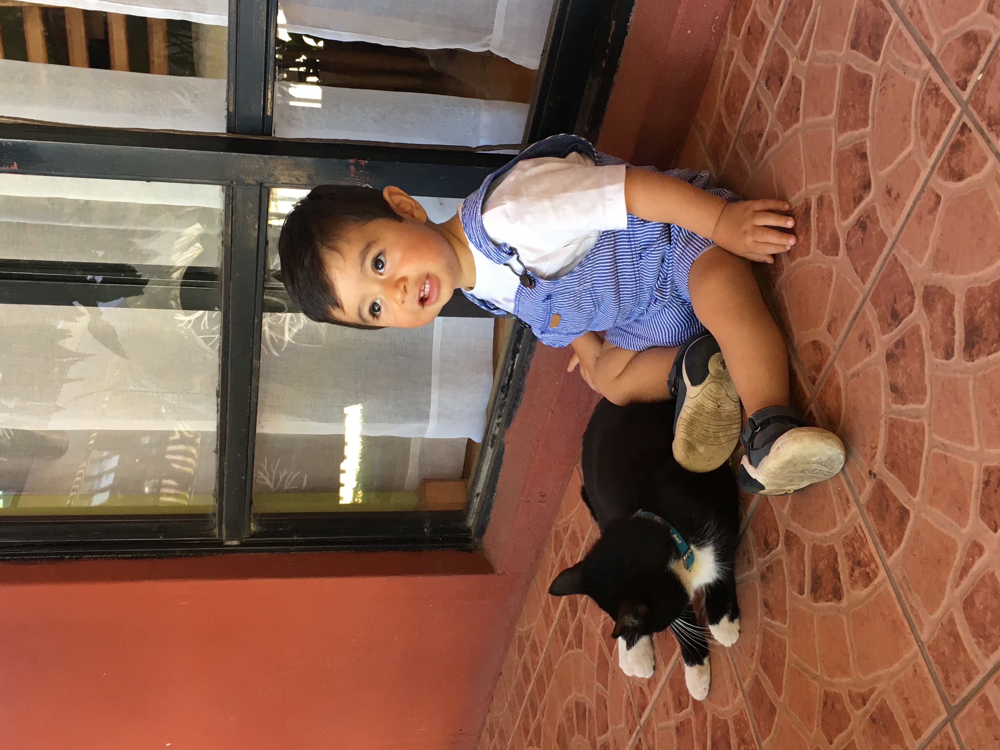
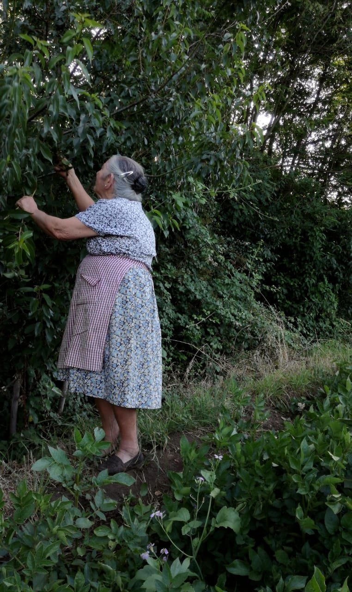

EFIMEROS
Denifinicion: Aquello que dura por un periodo muy corto de tiempo...
En la actualidad acostumbramos a la vida efimera, historias de 15seg,
mensajes que se pueden eliminar en unos minutos si nos arrepentimos de
haberlo enviado, videos de 60seg max, etc.
Pero... ¿que es lo que nos gustaria que perdurase?
En esta pag les muestro un poco de todo lo que yo quisiera que NO fuera pasajero en la vida :)
Antes de mirar, pincha el siguente enlace
Escuchame



Los atardeceres--------------------------------------------La inocencia--------------------------------------------Los abuelos